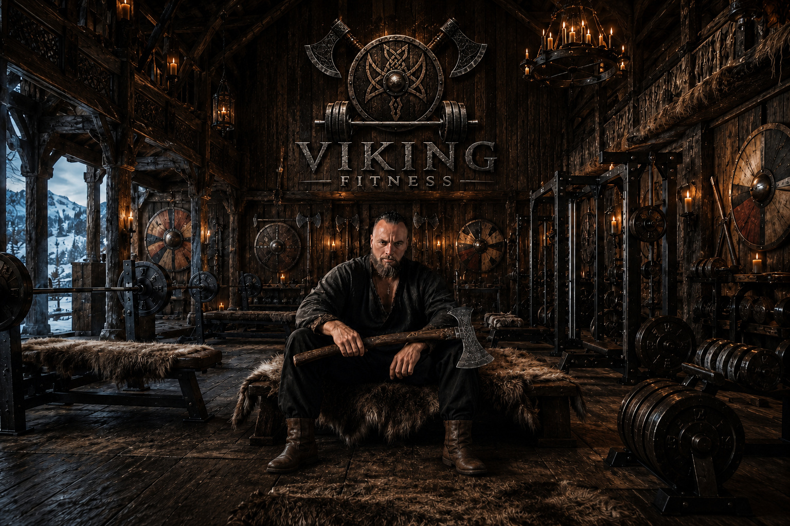
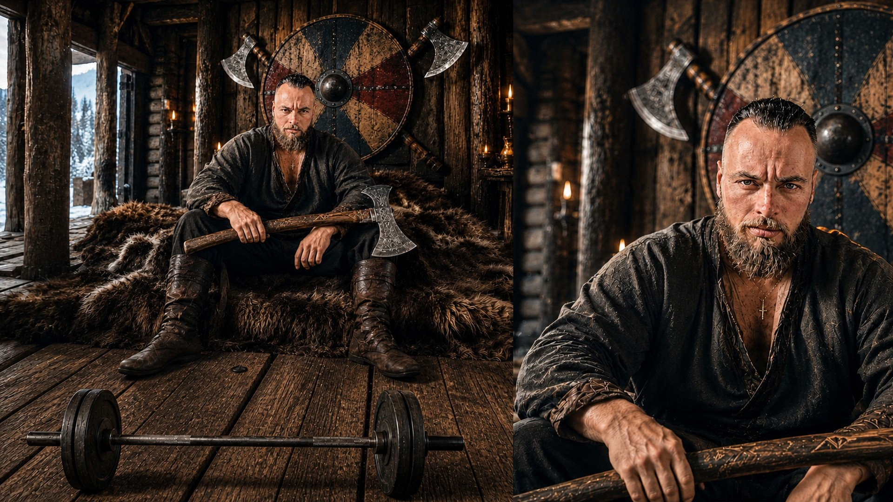

Proteína en cada plato
Entre 1,6 y 2,2 g por kilo de peso al día, repartidos en 3–5 tomas. Pescado graso, huevo, lácteo fermentado, carne magra y legumbre.
El umbral
Fuerza explosiva y nutrición nórdica. Con música ambiental, si quieres.
Puedes silenciarlo cuando quieras desde el icono del menú

Raíz nórdica, método contemporáneo
Fuerza explosiva y alimentación nórdica, aplicadas con evidencia. Un método medible, sin dietas de hambre ni promesas de atajo.
Asesoramiento en Español, English, Suomi y Norsk
El concepto
Viking Fitness no persigue una figura. Entrena cinco capacidades —fuerza, movilidad, resistencia, salud metabólica y composición corporal— para que tu cuerpo siga respondiendo dentro de cuarenta años. Se trabajan por dos vías: el hierro y la mesa.
Una metodología que no persigue la estética sino la capacidad. Cuatro sesiones semanales de entrenamiento de fuerza y movimiento, diseñadas para que a los cuarenta años tu cuerpo siga respondiendo. Sin fórmulas mágicas ni máquinas especiales: solo carga progresiva, intención y consistencia. El asesoramiento es personalizado según tu punto de partida. La periodización sigue las lecciones que la ciencia ha validado: bloques de trabajo con objetivos claros, descarga programada y revisión constante del progreso.

El asesoramiento parte del patrón dietético nórdico, uno de los mejor estudiados de Europa, y lo ajusto a un cuerpo que entrena fuerte. Comes mucho, comes bien y no pasas hambre.
Entre 1,6 y 2,2 g por kilo de peso al día, repartidos en 3–5 tomas. Pescado graso, huevo, lácteo fermentado, carne magra y legumbre.
Avena, centeno y cebada como base de energía. Alto poder saciante y liberación sostenida.
Remolacha, zanahoria, nabo, col, kale y bayas de bosque. Volumen de comida enorme por pocas calorías.
Aceite de oliva, frutos secos y pescado azul. Omega-3, vitamina D y saciedad sin ultraprocesados.
Nada de déficits salvajes. Calorías en rangos sostenibles y alimentos de alta saciedad.
Vivas en Helsinki, Oslo, Londres o Madrid, tu plan usa lo que hay en tu supermercado.
Fundamentación
No invento nada. Reúno la evidencia publicada sobre entrenamiento de alta velocidad y patrón dietético nórdico, y la aplico con criterio.
Doce semanas de sentadilla al 85–90% del 1RM mejoraron significativamente la densidad mineral ósea y el rendimiento neuromuscular. La carga alta —no la velocidad— es el estímulo óseo más eficaz.
PubMed · J Strength Cond Res →Una revisión sistemática con metaanálisis de 2025 establece que el entrenamiento de alta intensidad (75–80% 1RM, 3 sesiones/semana) es el protocolo con mayor evidencia para mejorar la densidad ósea en adultos sin enfermedades crónicas.
Frontiers in Physiology (2025) →El entrenamiento concurrente de fuerza y resistencia —cuando la fuerza se trabaja primero— produce adaptaciones neuromusculares superiores y mejora la potencia explosiva sin sacrificar capacidad aeróbica.
Frontiers Sports & Active Living (2025) →Una revisión de 2025 en PubMed documenta que el EPA y el DHA reducen la inflamación crónica de bajo grado, mejoran la sensibilidad a la insulina y protegen la densidad ósea. El salmón y el arenque son las fuentes más densas.
PubMed Central (2025) →Un metaanálisis de 2025 con ensayos controlados aleatorizados concluye que las dietas bajas en carbohidratos producen mayor pérdida de masa grasa a igualdad calórica, al desplazar el sustrato energético hacia los ácidos grasos.
Clinical Nutrition (2025) →Una revisión de 2024 en Current Osteoporosis Reports establece que las grasas insaturadas modulan positivamente el metabolismo óseo, mientras que las saturadas lo inhiben. El patrón nórdico, rico en omega-3, protege el esqueleto a largo plazo.
Current Osteoporosis Reports (2024) →Nature Reviews Immunology (2024) establece que los ultraprocesados alteran el equilibrio entre microbiota e inmunidad, incrementando el riesgo de síndrome metabólico y enfermedades inflamatorias crónicas. Comer real no es moda: es protección.
Nature Reviews Immunology (2024) →Una revisión sistemática con metaanálisis publicada en Diabetologia halló reducciones consistentes de colesterol no-HDL, insulina en ayunas, peso corporal e IMC en personas que siguieron un patrón dietético nórdico, sin restricción calórica.
Diabetologia (2022) →Un metaanálisis de 2025 concluye que los patrones ricos en proteína de calidad, omega-3 y vegetales reducen significativamente el riesgo de baja densidad ósea, mientras que las dietas ricas en ultraprocesados lo incrementan.
PMC · meta-análisis (2025) →Aviso: Viking Fitness es un servicio de entrenamiento y educación nutricional, no un tratamiento médico. La evidencia citada respalda los principios del método, no promete resultados individuales. Si tienes una patología, estás embarazada o tomas medicación, consulta a tu médico antes de empezar.
Tu saga, registrada
Todo lo que haces queda escrito. Entrenos, series, cargas, comidas, calorías, macros, peso y medidas. La app calcula tu volumen semanal, tu tendencia y tu rango dentro del clan.
Acompañamiento mensual
El método no cambia; cambia el acento. Elige el que quieras que domine tu año de entrenamiento. Sin permanencia, pago mensual.
Explosividad. Powerlifting y potencia con estructura.
Resistencia y durabilidad. Un cuerpo hecho para aguantar, correr y remar.
Hipertrofia. Volumen y densidad muscular con criterio.
Dudas
No. La fase de Forja está diseñada precisamente para quien empieza: aprendes los patrones básicos con carga ligera antes de tocar nada explosivo. Si ya entrenas, se ajusta el punto de partida según tu test inicial.
No. Uso el patrón nórdico como marco: cereal entero, verdura de raíz y col, pescado, proteína suficiente y grasa de calidad. Eso se traduce a lo que tengas en tu supermercado, sea en Oslo o en Sevilla.
Con barra, discos, un rack y un par de kettlebells hay de sobra. Existe una variante del plan para gimnasios básicos y otra para entrenar en casa con material mínimo.
Español e inglés en directo. Los materiales, planes y la app están además en finés y noruego.
En esta versión, todo lo que registras se queda en el almacenamiento local de tu navegador. No se envía a ningún servidor y puedes borrarlo cuando quieras.

Quién está detrás
Deportista y profesor de Educación Física. Llevo años combinando el entrenamiento de fuerza con el estudio de la historia del movimiento humano. Viking Fitness nace de una pregunta: ¿y si los métodos de entrenamiento que hoy valida la ciencia moderna ya los practicaban los pueblos del norte de Europa hace siglos?
Los vikingos levantaban piedras naturales como prueba de fuerza — el Húsafell Stone en Islandia o las piedras de vigor escandinavas eran ritos de paso. Remaban distancias enormes, luchaban glíma y cargaban troncos. Su alimentación se basaba en lo que hoy llamamos paleo: pescado salvaje, caza, tubérculos, bayas, lácteos fermentados como el skyr y grasas animales de calidad.
Hoy sabemos por qué funcionaba. La ciencia confirma que el entrenamiento de fuerza explosiva aumenta la densidad ósea, que las dietas ricas en proteína y grasas saludables optimizan la composición corporal, y que la periodización por bloques — algo que los guerreros nórdicos hacían por instinto entre campañas — es el estándar en rendimiento deportivo moderno.
Este método no es mejor ni peor que otro. Es una forma de entender la optimización física apoyada en evidencia y enraizada en la tradición de fuerza del norte de Europa. Sin marketing de suplementos y sin dietas de hambre: hierro, comida real y un plan que se mide.
Primer paso
Cuéntame dónde estás y a dónde quieres llegar. Te devuelvo una propuesta concreta en 48 horas, sin compromiso.